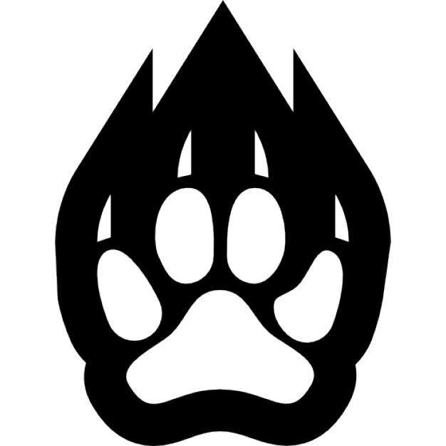

Bonjour ! Je vais vous présenter les différents types de félins.
Le lynx est un petit félin de la taille d'un chevreuil, à la robe tachetée allant du beige au brun et possédant des pinceaux de poils caractéristiques au bout de ses oreilles. Il vit surtout dans les endroits montagneux et rocailleux, qui lui procurent les refuges nécessaires à sa tranquilité. Comme la plupart des félins, c'est un solitaire. On commence à revoir le bout de son nez dans notre pays grâce à l'effort de gens qui se battent pour sa réintroduction et pour le changement des mentalités.
Le tigre est le seul grand félin à porter des rayures. Sa fourrure varie de l'orange sombre à l'ocre rougeâtre. Le ventre, le cou et l'intérieur des membres sont blanc crémeux. Le tigre de sibérie est généralement plus clair, alors que celui d'Indochine est beaucoup plus sombre. Le corps est rayé d'une série de bandes brun-foncé ou noires.
Le bengal est une race de chat originaire des États-Unis. Cette race de taille moyenne à grande, par rapport aux autres chats, se caractérise par sa fourrure ressemblant à celle du Chat léopard du Bengale, une espèce de chat sauvage dont il est issu, par croisement avec des chats domestiques.
